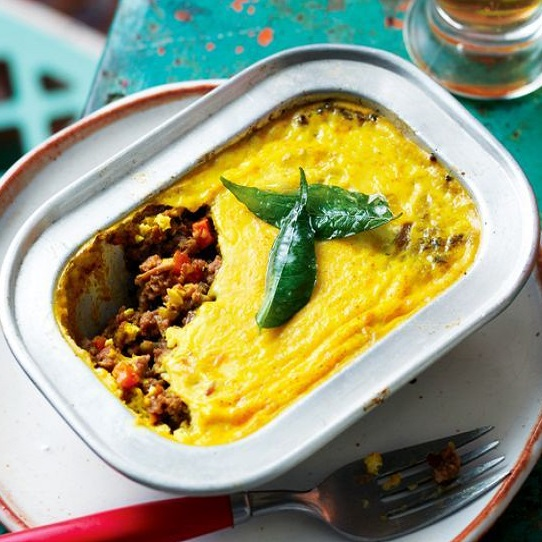
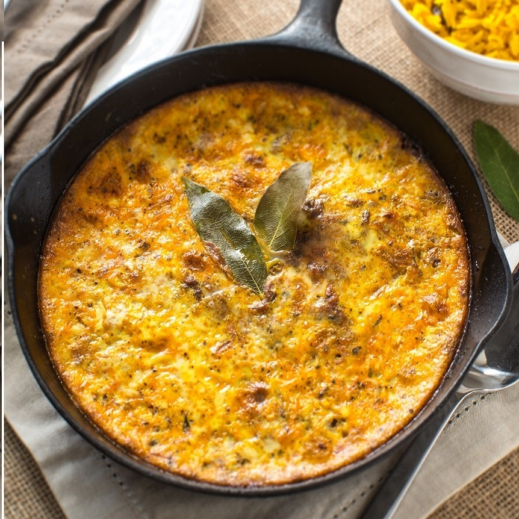
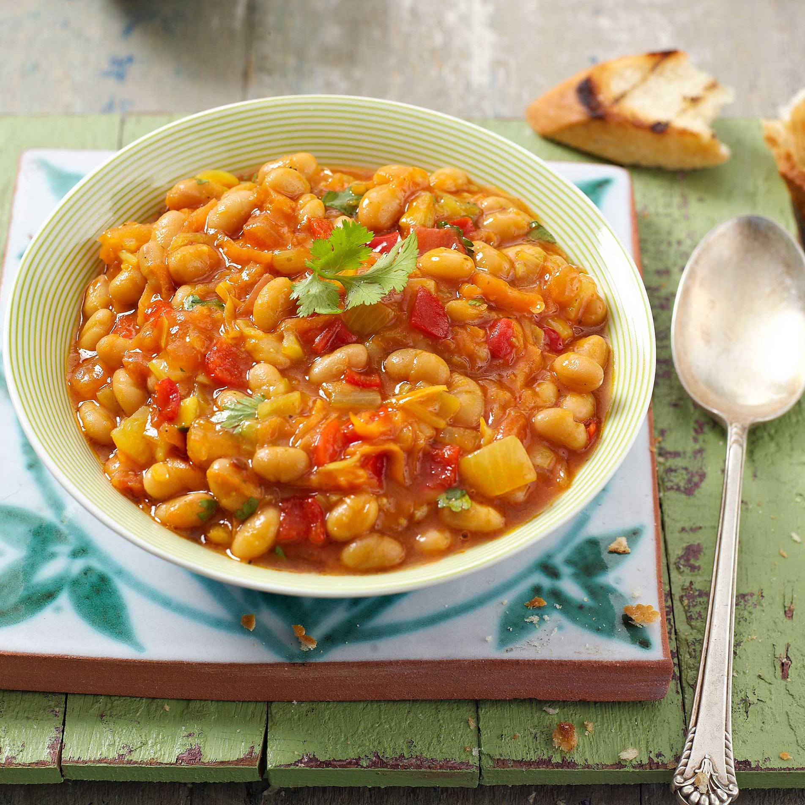
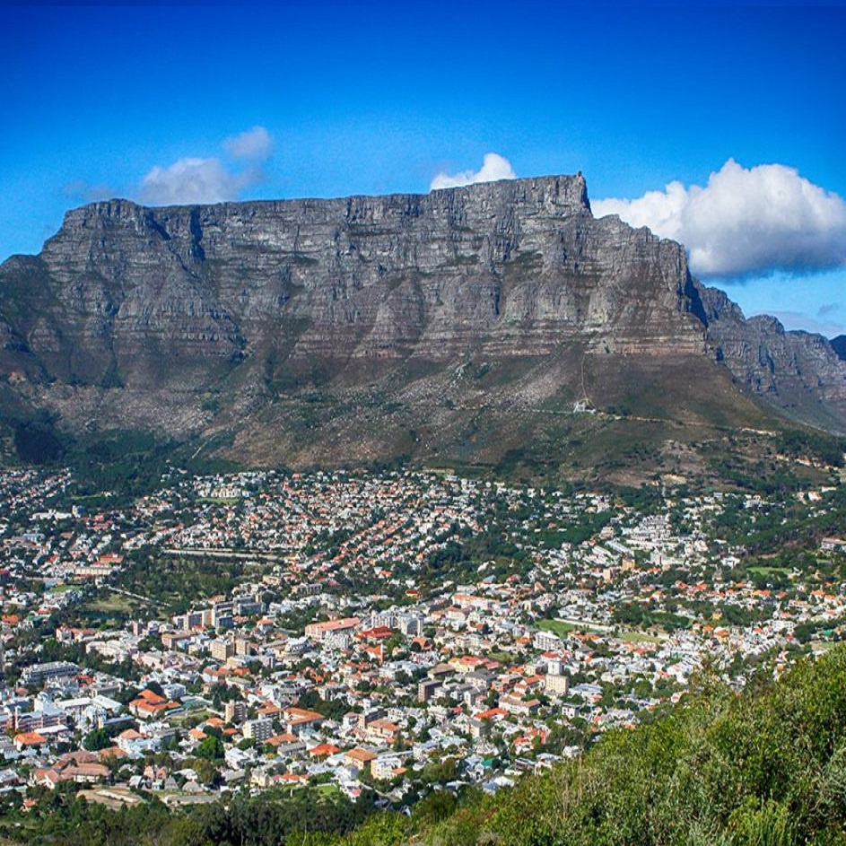
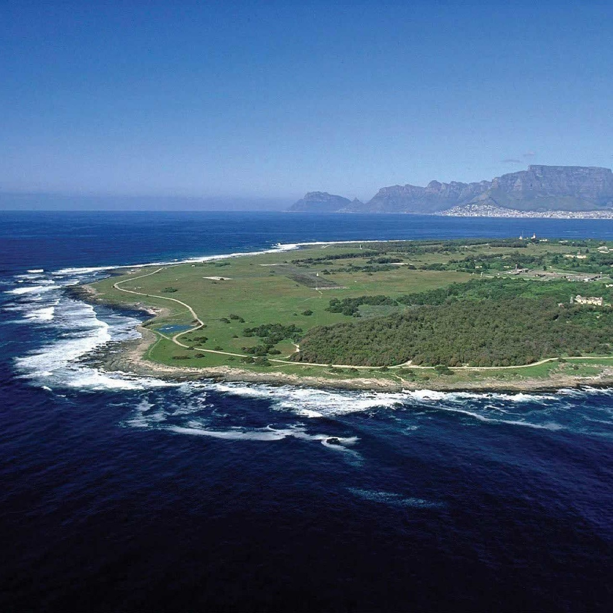
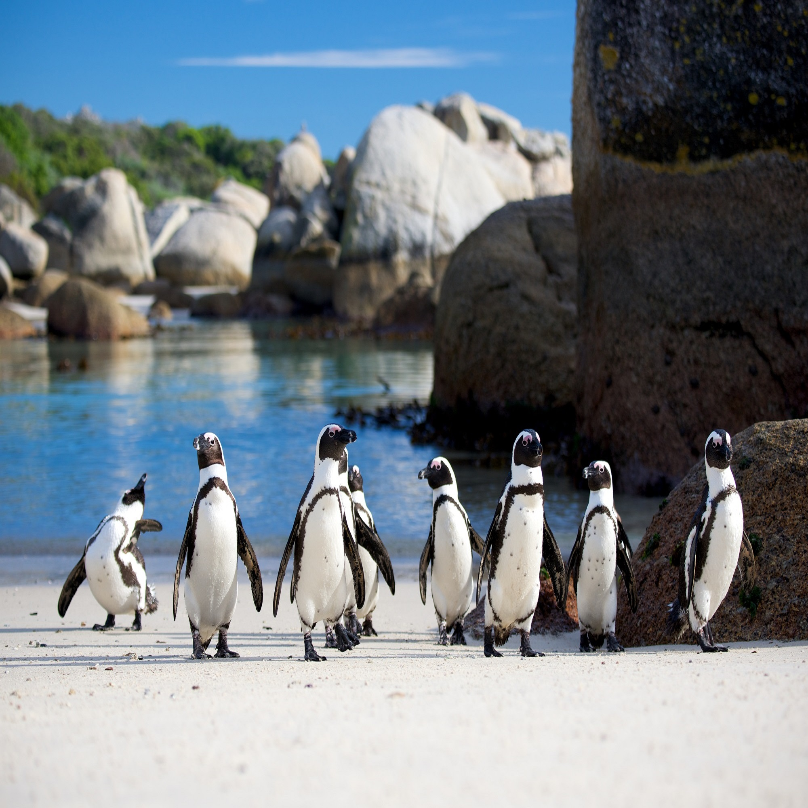

Bobotie
Bobotie ist ein Hackbraten aus Südafrika, der auf Zuwanderer aus Indosnesien zurückgeht. Es besteht aus scharf gewürztem Hackfleisch, das teils mit kleingeschnittenem und angedünstetem Gemüse und/oder Früchten gemischt wird. Das Hackfleisch wird dann in einer Auflaufform mit einer Deckschicht aus Eiermilch versehen und im Ofen gebacken. Bobotie wird portionsweise auf Safranreis serviert und isst man meistens ein Chutney. Das Gericht ist seit dem 17. Jahrhundert in Südafrika bekannt und stammt ursprünglich aus Java, Indonesien.

- Rinderhack
- Zwiebel
- Knoblauch
- Eier
- Milch
- Rosinen
Zutaten
Bobotie
Bobotie ist ein Hackbraten aus Südafrika, der auf Zuwanderer aus Indosnesien zurückgeht. Es besteht aus scharf gewürztem Hackfleisch, das teils mit kleingeschnittenem und angedünstetem Gemüse und/oder Früchten gemischt wird. Das Hackfleisch wird dann in einer Auflaufform mit einer Deckschicht aus Eiermilch versehen und im Ofen gebacken. Bobotie wird portionsweise auf Safranreis serviert und isst man meistens ein Chutney. Das Gericht ist seit dem 17. Jahrhundert in Südafrika bekannt und stammt ursprünglich aus Java, Indonesien.
- Rinderhack
- Zwiebel
- Knoblauch
- Eier
- Milch
- Rosinen
Zutaten
Chakalaka
Chakalaka ist eine afrikanische Würzsauce. Der Name stammt angeblich aus der Bantussprache Setswana, wobei es in Südafrika unterschiedliche Schreibweisen gibt.
In den 50er Jahren hatten Bergarbeiter in Südafrika keine große Auswahl an Nahrung, weshalb sie alles zur Verfügung stehende, wie Tomaten, Karotten undPaprika, in einen Topf geworfen und gekocht haben. Dieser Mix wurde anschließend als Sauce, Suppe oder auch als Salat serviert und resultierte nach einiger Überarbeitung in der heute als Chakalaka bekannten Speise, welche man zusammen mit Brot isst.

- Zwiebeln
- Knoblauch
- Chillischote
- Olivenöl
- Paprika
- Tomaten
- Möhren
- Bohnen
Zutaten
Chakalaka
Chakalaka ist eine afrikanische Würzsauce. Der Name stammt angeblich aus der Bantussprache Setswana, wobei es in Südafrika unterschiedliche Schreibweisen gibt.
In den 50er Jahren hatten Bergarbeiter in Südafrika keine große Auswahl an Nahrung, weshalb sie alles zur Verfügung stehende, wie Tomaten, Karotten undPaprika, in einen Topf geworfen und gekocht haben. Dieser Mix wurde anschließend als Sauce, Suppe oder auch als Salat serviert und resultierte nach einiger Überarbeitung in der heute als Chakalaka bekannten Speise, welche man zusammen mit Brot isst.
- Zwiebeln
- Knoblauch
- Chillischote
- Olivenöl
- Paprika
- Tomaten
- Möhren
- Bohnen
Zutaten
attraktionen
Tafelberg
Direkt im Rücken des Stadtzentrums befindet sich der in seiner Breite beeindruckende Tafelberg, der die City wie eine scheinbare riesige Mauer überragt. Er bietet eine einmalig herrliche Kulisse und ist nicht zu Unrecht eines der bekanntesten Symbole Südafrikas. Spaziergänge oder Wanderungen auf dem Tafelberg gehören zu den Höhepunkten eines Kapstadt-Besuchs! Von oben bietet sich ein grandioser Ausblick.

Kap der Guten Hoffnung
Das Kap, wie es von den Einheimischen auch abgekürzt wird, ist der südwestlichste Punkt Afrikas. Experten aus aller Welt streiten immer noch, ob nun am Kap der Guten Hoffnung oder doch dem Kap Agulhas der Atlantische Ozean und der Indische Ozean aufeinandertreffen. Die Kapstädter sind natürlich davon überzeugt, dass nur bei ihnen dieser Ort liegen kann und ganz von der Hand weisen kann man dieses Argument nicht.

Robben Island
Robben Island ist eine Insel in der Tafelbucht im Atlantik etwa zwölf Kilometer vor der Küstenstadt Kapstadt entfernt. Die frühere Gefängnisinsel wurde Mitte der 1990er Jahre zu einem Natur- und Nationaldenkmal, das frühere Gefängnisgebäude zu einem Museum umgestaltet. In dem einstigen Gefängnis hatte Nelson Mandela fast zwei Jahrzehnte als Häftling in einer vier Quadratmeter großen Einzelzelle verbracht.

Boulders Beach
Boulders Beach ist ein Strandabschnitt, der in Simon’s Town auf der Kap-Halbinsel in Südafrika liegt. Hier ist eine Brillenpinguin-Kolonie beheimatet. Am Boulders Beach befindet sich ein Besucherzentrum, das Zugang in den Tafelberg-Nationalpark gewährt. Der Strandabschnitt ist Teil dieses Nationalparks. Dort leben ca. 3000 Brillenpinguine.
buchen
Generelle Informationen